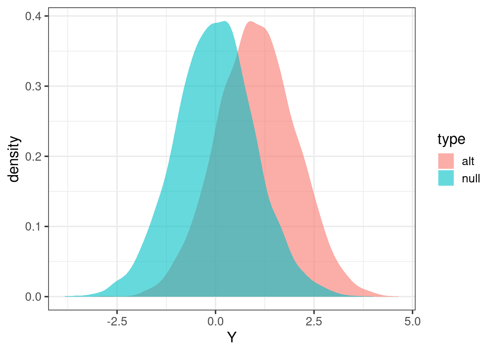

Last updated: 2024-01-07
Checks: 6 1
Knit directory: QBS-statsgen/
This reproducible R Markdown analysis was created with workflowr (version 1.6.2). The Checks tab describes the reproducibility checks that were applied when the results were created. The Past versions tab lists the development history.
The R Markdown is untracked by Git. To know which version of the R
Markdown file created these results, you’ll want to first commit it to
the Git repo. If you’re still working on the analysis, you can ignore
this warning. When you’re finished, you can run
wflow_publish to commit the R Markdown file and build the
HTML.
Great job! The global environment was empty. Objects defined in the global environment can affect the analysis in your R Markdown file in unknown ways. For reproduciblity it’s best to always run the code in an empty environment.
The command set.seed(20231230) was run prior to running
the code in the R Markdown file. Setting a seed ensures that any results
that rely on randomness, e.g. subsampling or permutations, are
reproducible.
Great job! Recording the operating system, R version, and package versions is critical for reproducibility.
Nice! There were no cached chunks for this analysis, so you can be confident that you successfully produced the results during this run.
Great job! Using relative paths to the files within your workflowr project makes it easier to run your code on other machines.
Great! You are using Git for version control. Tracking code development and connecting the code version to the results is critical for reproducibility.
The results in this page were generated with repository version 3b4b60d. See the Past versions tab to see a history of the changes made to the R Markdown and HTML files.
Note that you need to be careful to ensure that all relevant files for
the analysis have been committed to Git prior to generating the results
(you can use wflow_publish or
wflow_git_commit). workflowr only checks the R Markdown
file, but you know if there are other scripts or data files that it
depends on. Below is the status of the Git repository when the results
were generated:
Ignored files:
Ignored: .Rproj.user/B81CBE6F/bibliography-index/
Ignored: .Rproj.user/B81CBE6F/ctx/
Ignored: .Rproj.user/B81CBE6F/pcs/
Ignored: .Rproj.user/B81CBE6F/presentation/
Ignored: .Rproj.user/B81CBE6F/profiles-cache/
Ignored: .Rproj.user/B81CBE6F/sources/per/
Ignored: .Rproj.user/B81CBE6F/tutorial/
Ignored: .Rproj.user/shared/notebooks/1C2AC29C-e1-gwas-power/
Untracked files:
Untracked: .Rhistory
Untracked: analysis/e1-gwas-power.Rmd
Unstaged changes:
Modified: .Rproj.user/B81CBE6F/persistent-state
Modified: .Rproj.user/B81CBE6F/sources/prop/4C8B7780
Modified: .Rproj.user/B81CBE6F/sources/prop/BBFFB970
Modified: .Rproj.user/B81CBE6F/sources/prop/INDEX
Deleted: .Rproj.user/B81CBE6F/sources/s-e0e7218a/27031BD8
Modified: .Rproj.user/B81CBE6F/sources/s-e0e7218a/27031BD8-contents
Modified: .Rproj.user/B81CBE6F/sources/s-e0e7218a/34A40D3B
Modified: .Rproj.user/B81CBE6F/sources/s-e0e7218a/34A40D3B-contents
Modified: .Rproj.user/B81CBE6F/sources/s-e0e7218a/6C1FFABC
Deleted: .Rproj.user/B81CBE6F/sources/s-e0e7218a/73BDB580
Modified: .Rproj.user/B81CBE6F/sources/s-e0e7218a/lock_file
Deleted: .Rproj.user/shared/notebooks/1EB0B2DC-e1-gwas/1/B81CBE6Fe0e7218a/chunks.json
Modified: .Rproj.user/shared/notebooks/paths
Modified: analysis/index.Rmd
Note that any generated files, e.g. HTML, png, CSS, etc., are not included in this status report because it is ok for generated content to have uncommitted changes.
There are no past versions. Publish this analysis with
wflow_publish() to start tracking its development.
pwr,
tidyverseinstall.packages("pwr")
install.packages("tidyverse")In this vignette, we’d like to:
Consider a single locus, its genotype is \(X\). We pre-specify the model for continuous trait \(Y\) and genotype \(X\) as
\[Y = \beta X + \epsilon, \epsilon ~ N(0, \sigma_\epsilon^2)\] where we assume
To simulate genotype, we assume the locus is bialleilic and each individual is diploid. So that \(X \sim Binomial(2, f)\) with \(f\) as minor allele frequency (here we encode minor allele as 1 and major allele as 0). with the linear model for simulate \(Y\) above, this basically means we are simulating \(Y\) under the additive model.
Given genotype, to simulate phenotype, we need to know \(\beta\) and \(\sigma_\epsilon^2\).
library(tidyverse)── Attaching packages ─────────────────────────────────────── tidyverse 1.3.1 ──✔ ggplot2 3.3.5 ✔ purrr 0.3.4
✔ tibble 3.1.2 ✔ dplyr 1.0.7
✔ tidyr 1.1.3 ✔ stringr 1.4.0
✔ readr 1.4.0 ✔ forcats 0.5.1── Conflicts ────────────────────────────────────────── tidyverse_conflicts() ──
✖ dplyr::filter() masks stats::filter()
✖ dplyr::lag() masks stats::lag()simulate_genotype = function(maf, num_individuals, num_replicates) {
# maf: minor allele frequency
# num_individuals: the number of individuals in each replicates
# num_replicates: the number of replicates
# it returns a matrix with num_individuals rows and num_replicates columns
genotype = matrix(
rbinom(num_individuals * num_replicates, 2, maf),
nrow = num_individuals,
ncol = num_replicates
)
return(genotype)
}
simulate_phenotype = function(genotype, beta, sig2epsi) {
# genotype: each column is one replicate
# beta: effect size of the linear model
# sig2epsi: the variance of the noise term
num_individuals = nrow(genotype)
num_replicates = ncol(genotype)
epsilon = matrix(
rnorm(num_individuals * num_replicates, mean = 0, sd = sqrt(sig2epsi)),
nrow = num_individuals,
ncol = num_replicates
)
phenotype = genotype * beta + epsilon
return(phenotype)
}
linear_model_simulator = function(num_replicates, num_individuals, maf, beta, sig2epsi) {
# simulate genotype
X = simulate_genotype(maf, num_individuals, num_replicates)
# simulate phenotype given genotype and model parameters
Y = simulate_phenotype(X, beta, sig2epsi)
return(list(Y = Y, X = X))
}Here we simulate 1000 individuals per replicate and 100 replicates in total. With parameters:
# specify paramters
nindiv = 1000
nreplicate = 5000
maf = 0.30
b = 0.05
sig2e = 1
# run simulator
## under the alternative
data_alt = linear_model_simulator(nreplicate, nindiv, maf, 0.05, sig2e)
## under the null
data_null = linear_model_simulator(nreplicate, nindiv, maf, 0, sig2e) The following chunk of R code implement hypothesis test procedure
based on linear regression. Essentially, the R function
calcz takes genotype X and Y and
returns test statistic z-score.
runassoc = function(X,Y)
{
pvec = rep(NA,ncol(X))
bvec = rep(NA,ncol(X))
for(ss in 1:ncol(X))
{
x = X[,ss]
y = Y[,ss]
fit = lm(y~x)
pvec[ss] = summary(fit)$coefficients[2,4]
bvec[ss] = summary(fit)$coefficients[2,1]
}
list(pvec=pvec, bvec=bvec)
}
p2z = function(b,p)
{
## calculate zscore from p-value and sign of effect size
sign(b) * abs(qnorm(p/2))
}
calcz = function(X,Y)
{
tempo = runassoc(X,Y)
p2z(tempo$bvec,tempo$pvec)
}Now that we can calculate test statistics under the null and alternative.
Zalt = calcz(data_alt$X, data_alt$Y)
Znull = calcz(data_null$X, data_null$Y)
tibble(Y = c(Zalt,Znull), type=c(rep("alt",length(Zalt)),rep("null",length(Znull))) ) %>% ggplot(aes(Y,fill=type)) + geom_density(color=NA,alpha=0.6) + theme_bw(base_size = 15)
## define significance level
alpha = 0.01
## find threshold for rejection; we want P(Znull > alpha/2) two-sided
threshold = quantile(Znull, 1 - alpha/2)
## calculate proportion of Zalt above threshold
mean(Zalt > threshold)[1] 0.048library(pwr)
calc_r = function(b,maf,sdy) {sdx = sqrt(2 * maf * (1-maf)); sdx * b * sdy}
r = calc_r(b=b,maf=maf,sdy= sqrt(sig2e + b**2*2*maf*(1-maf)))
pwr.r.test(n = nindiv, r= r, sig.level = alpha)
approximate correlation power calculation (arctangh transformation)
n = 1000
r = 0.03242071
sig.level = 0.01
power = 0.06048404
alternative = two.sided
sessionInfo()R version 4.1.0 (2021-05-18)
Platform: x86_64-pc-linux-gnu (64-bit)
Running under: CentOS Linux 7 (Core)
Matrix products: default
BLAS: /software/R-4.1.0-no-openblas-el7-x86_64/lib64/R/lib/libRblas.so
LAPACK: /software/R-4.1.0-no-openblas-el7-x86_64/lib64/R/lib/libRlapack.so
locale:
[1] LC_CTYPE=en_US.UTF-8 LC_NUMERIC=C LC_TIME=C
[4] LC_COLLATE=C LC_MONETARY=C LC_MESSAGES=C
[7] LC_PAPER=C LC_NAME=C LC_ADDRESS=C
[10] LC_TELEPHONE=C LC_MEASUREMENT=C LC_IDENTIFICATION=C
attached base packages:
[1] stats graphics grDevices utils datasets methods base
other attached packages:
[1] pwr_1.3-0 forcats_0.5.1 stringr_1.4.0 dplyr_1.0.7
[5] purrr_0.3.4 readr_1.4.0 tidyr_1.1.3 tibble_3.1.2
[9] ggplot2_3.3.5 tidyverse_1.3.1
loaded via a namespace (and not attached):
[1] Rcpp_1.0.9 lubridate_1.7.10 assertthat_0.2.1 rprojroot_2.0.2
[5] digest_0.6.27 utf8_1.2.1 R6_2.5.0 cellranger_1.1.0
[9] backports_1.2.1 reprex_2.0.0 evaluate_0.20 highr_0.9
[13] httr_1.4.2 pillar_1.6.1 rlang_1.1.0 readxl_1.3.1
[17] rstudioapi_0.13 jquerylib_0.1.4 rmarkdown_2.21 labeling_0.4.2
[21] munsell_0.5.0 broom_0.7.8 compiler_4.1.0 httpuv_1.6.1
[25] modelr_0.1.8 xfun_0.38 pkgconfig_2.0.3 htmltools_0.5.5
[29] tidyselect_1.1.1 workflowr_1.6.2 fansi_0.5.0 crayon_1.5.2
[33] dbplyr_2.1.1 withr_2.5.0 later_1.2.0 grid_4.1.0
[37] jsonlite_1.7.2 gtable_0.3.0 lifecycle_1.0.3 DBI_1.1.1
[41] git2r_0.28.0 magrittr_2.0.1 scales_1.1.1 cli_3.6.1
[45] stringi_1.6.2 cachem_1.0.5 farver_2.1.0 fs_1.6.1
[49] promises_1.2.0.1 xml2_1.3.2 bslib_0.4.2 ellipsis_0.3.2
[53] generics_0.1.0 vctrs_0.3.8 tools_4.1.0 glue_1.4.2
[57] hms_1.1.0 fastmap_1.1.0 yaml_2.2.1 colorspace_2.0-2
[61] rvest_1.0.0 knitr_1.42 haven_2.4.1 sass_0.4.0